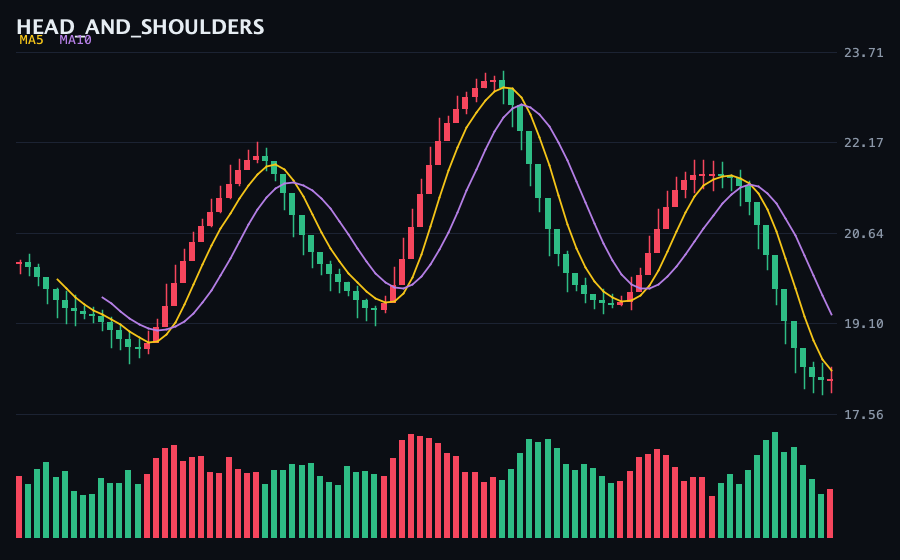
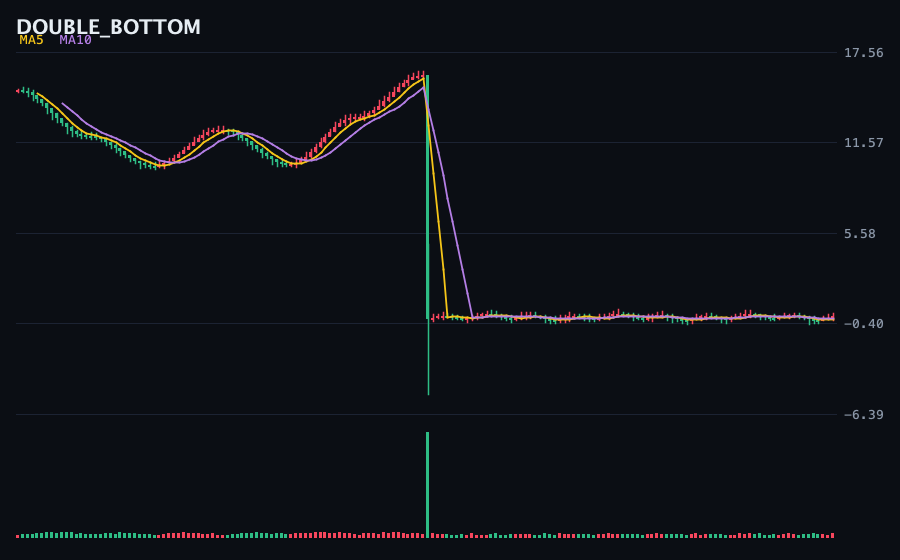
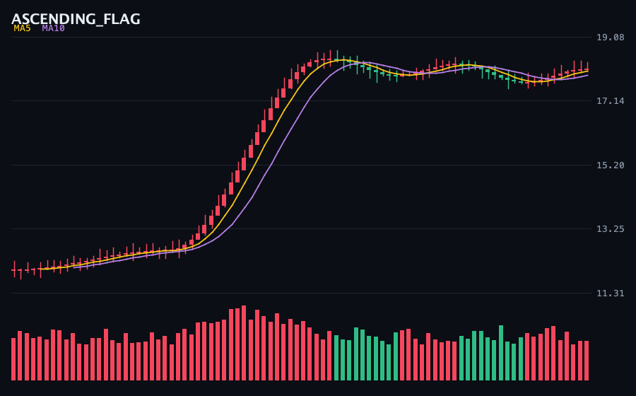
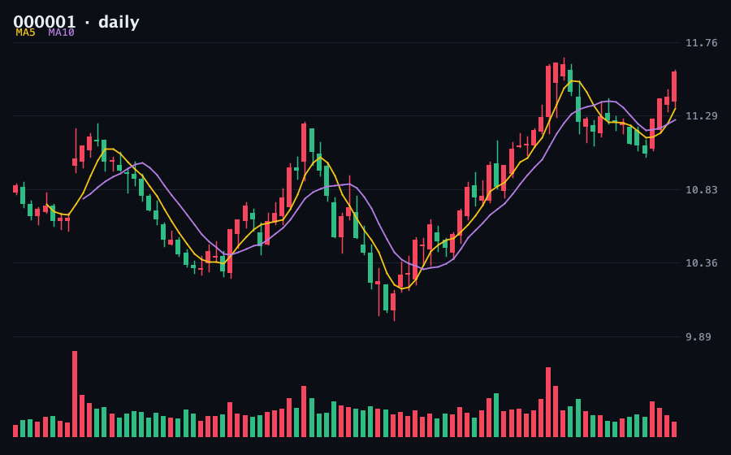

所有"AI 炒股"项目都在把数字喂给大模型。但K线形态是视觉概念——人类交易者是怎么读图的，就应该怎么交给 AI。
上一篇文章（《我给 AI 写了两个 Kotlin MCP 服务器》）发布后，我继续挖 MCP 生态的空白，发现了一件奇怪的事：把渲染好的K线图喂给视觉大模型做形态识别，这个方向全网几乎没有认真做过——搜遍 GitHub，同类项目全部低于 2 Star，而最接近的 AI-Kline（341★）只做数值计算。连 31k Star 的 Vibe-Trading，视觉工具也只拿来 OCR。
于是我做了 kline-vision。先看结果——
下面三张K线图由程序合成（稍后解释为什么），我把它们交给视觉大模型，不给任何提示，只问"这是什么形态"：



3/3 全对。而且它给出的不是分类标签，是带结构的分析——颈线位置、W 形成因、旗杆旗面关系。这正是人类交易员读图的方式。
做形态识别，最大的难题是没有标注数据。真实K线的形态标注主观且昂贵，公开数据集不存在。
kline-vision 反过来解决：它内置一个参数化形态生成器——先画出形态的几何骨架（头肩顶就是"左肩高点 → 颈线低点 → 更高的头部 → 颈线低点 → 与左肩等高的右肩 → 向下突破"），再叠加真实感的噪声（影线、抖动、量能变化）。
// 头肩顶的骨架：数值本身就是标签
val anchors = listOf(
base, base - 1.2, // 上涨铺垫
base + 1.8, // 左肩
base - 0.6, base + 3.2, // 颈线低点、头部（最高）
base - 0.6, base + 1.7, // 颈线低点、右肩
base - 1.9, // 向下突破
)标签不是标的，是构造出来的——所以是精确的。一条命令就能生成任意规模的评测集（6 种形态 × N 个变体 + manifest），给任何视觉模型打分。想比较 GPT-4o、GLM-4V、Qwen-VL 谁更会读K线？跑一遍评测集就有答案。
图表渲染没有用任何库——纯 Java2D 手绘：红涨绿跌（A股惯例）、蜡烛实体与影线、MA5/MA10 均线、量能面板、深色终端风格。确定性输入 = 确定性输出，同一份数据永远渲染出同一张图，评测才有意义。

analyze_stock 一条链路完成"拉行情 → 渲染 → 识别"整个能力封装成了 4 个 MCP 工具，Claude / Cursor 直接调用：
render_synthetic 渲染带标签的演示形态图（无需 API key）
generate_eval 生成完整评测集
classify_chart 图片 → 视觉模型 → 形态 JSON
analyze_stock 股票代码 → 真实行情 → 渲染 → 识别（完整闭环）视觉模型走 OpenAI 兼容协议，GPT-4o / GLM-4V / Qwen-VL / 本地 vLLM 换个环境变量就切换。没配 key 时优雅降级：照常渲染出图，返回配置指引。
调研时发现另一个空白：交易 Agent 框架爆火，但没人做 A股规则的模拟器——让 Agent 回测A股策略，它会愉快地把早上买的股票下午卖掉，因为没有东西强制 T+1。
于是同一天写了 t1-replay：确定性规则引擎（T+1 锁定、涨跌停 ±10%/±20%、整手、佣金印花税过户费全模型）暴露成 4 个 MCP 工具。11 个规则单测全绿，真实行情 e2e 里 Agent 试图当日卖出被当场拒绝——然后次日用更高的价格卖出，每分钱都对账。
这一轮的三件套已经形成闭环：kline-mcp 喂数据和指标，kline-vision 负责视觉形态识别，t1-replay 负责规则约束下的训练与评分。任何一个 MCP 客户端（Claude、Cursor、Vibe-Trading……）都能把它们组装成自己的A股研究工作台。
数据来自公开接口，形态识别仅供研究学习，不构成投资建议。